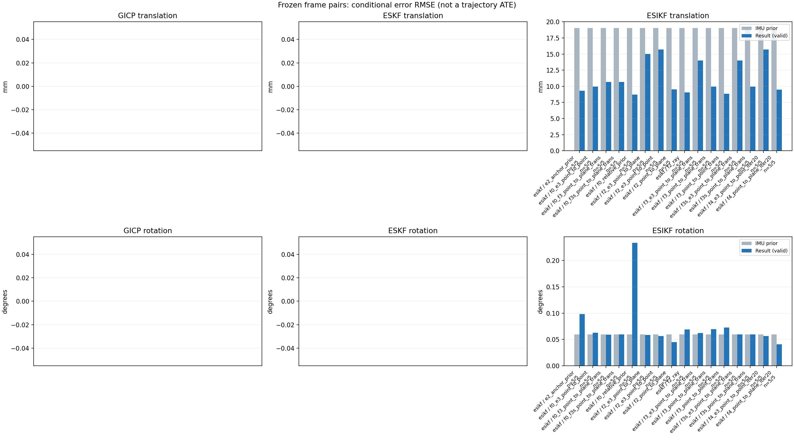

20261015_112940_pitch_up · depth=disparity_cache · cache=4f1e1d70d9746baef3d5
模型视差：/home/ubuntu22/slam/SIO_SLAM/models/tensorrt/disp_896x448_fp16.plan；engine SHA256=604cf6ac1f705c877260711730dd5d2d58c2a21f3020c03c668401ef7fb1e768。输入为生产裁剪与光照处理后的 RGB 0..255；此实验使用原始浮点像素视差，不应用完整前端的邻域视差后处理。
原始 ONNX SHA256：e9f49736a65d68d06681add463866b6defdf78fdd7f4f50f6cc941b682fdc0bc。
代价体图改写验证：ONNX Runtime 固定随机特征输入，最大绝对误差 0；该项检查图改写，完整模型精度仍需由录制数据评估。
配准代码版本：744ac2d993ae629b0cc44a3b1d995e04ab4fad48；观测生成版本：744ac2d993ae629b0cc44a3b1d995e04ab4fad48。
固定图像对与纯 IMU 先验；ESKF 回放固定 GICP 观测，ESIKF 直接读取点云。真值只用于此报告。
同时查看 converged 与 solver_status：上游默认 Stereo 在 max_iter / stopped_at_minimum 时也可能置 converged=true。valid 表示输入检查通过，不表示精度提升。欧氏 GICP 未提供独立的点距 RMSE，该列显示 NaN。
误差按每对图像的锚点计算，单位 m / degrees。此处 RMSE 不是全序列 ATE；末帧受同一锚点条件约束。NIS 与条件马氏距离是诊断量，少量相关图像对不能用于宣称协方差已校准。
全部指标 CSV · R / P 矩阵 CSV · Stereo 求解逐轮 CSV · ESIKF 逐轮轨迹 CSV · 末轮 H / R / K_pose 矩阵 CSV · 配置快照 · 矢量图
unflagged 排除纯惯性先验平移误差超过 50 mm 的图像对；whitened 为误差按协方差白化后的每自由度均值，协方差与实际误差相符时约为 1。prior_whitened 用真值误差只检验先验 P；NIS 为 ESIKF 首轮 rᵀ(P+R)⁻¹r，不用真值，检验的是 P+R 的总量，单靠它分不开 P 与 R，偏差、错误对应和线性化误差也会抬高它。观测方差超过先验方差 1e+04 倍的方向视为不可观，从 NIS 及其自由度中去掉（nis_dof）。一致时 nis_per_dof 均值约 1、nis_over_chi2_median 中位数约 1；帧对少且共享序列，超出 95% 分位的比例只作参考。
| stage | method | variant | valid | total | result_translation_rmse_m | result_rotation_rmse_deg | result_translation_median_m | result_rotation_median_deg | result_translation_rmse_unflagged_m | result_rotation_rmse_unflagged_deg | improved_translation | improved_rotation | posterior_whitened_by_P_rot_mean | posterior_whitened_by_P_trans_mean | prior_whitened_by_P_rot_mean | prior_whitened_by_P_trans_mean | nis_per_dof_mean | nis_over_chi2_median_median | nis_exceeds_chi2_95_fraction |
|---|---|---|---|---|---|---|---|---|---|---|---|---|---|---|---|---|---|---|---|
| esikf | esikf | e2_anchor_prior | 5 | 5 | 0.0093062 | 0.098328 | 0.0070664 | 0.033776 | 0.0093062 | 0.098328 | 2 | 1 | 181.35 | 294.47 | 104.17 | 15.755 | 10.14 | 4.6468 | 1 |
| esikf | esikf | f0_e3_point_to_point | 5 | 5 | 0.0099475 | 0.062516 | 0.0095173 | 0.028416 | 0.0099475 | 0.062516 | 2 | 1 | 5.366 | 4.9306 | 5.14 | 1.5423 | 0.11482 | 0.071758 | 0 |
| esikf | esikf | f0_f3_point_to_plane_trans | 5 | 5 | 0.010697 | 0.059219 | 0.010021 | 0.0276 | 0.010697 | 0.059219 | 1 | 3 | 5.0828 | 58.525 | 5.14 | 1.5423 | 12.841 | 4.965 | 0.6 |
| esikf | esikf | f0_f3s_point_to_plane_trans | 5 | 5 | 0.010694 | 0.059768 | 0.010013 | 0.02833 | 0.010694 | 0.059768 | 1 | 0 | 5.14 | 58.392 | 5.14 | 1.5423 | 12.841 | 4.965 | 0.6 |
| esikf | esikf | f0_relative_prior | 5 | 5 | 0.0087259 | 0.23341 | 0.0049298 | 0.036838 | 0.0087259 | 0.23341 | 1 | 1 | 138.23 | 186.91 | 5.14 | 1.5423 | 3.734 | 4.1244 | 0.8 |
| esikf | esikf | f2_e3_point_to_plane | 5 | 5 | 0.015019 | 0.058587 | 0.0063894 | 0.028307 | 0.015019 | 0.058587 | 4 | 3 | 106.15 | 15.368 | 104.17 | 15.755 | 0.69582 | 0.48597 | 0.2 |
| esikf | esikf | f2_e3_point_to_point | 5 | 5 | 0.015715 | 0.056544 | 0.0064097 | 0.028339 | 0.015715 | 0.056544 | 2 | 2 | 108.21 | 20.275 | 104.17 | 15.755 | 0.1975 | 0.11083 | 0 |
| esikf | esikf | f2_point_to_plane | 5 | 5 | 0.0095352 | 0.044806 | 0.0061002 | 0.027372 | 0.0095352 | 0.044806 | 3 | 3 | 134.85 | 37.825 | 104.17 | 15.755 | 17.739 | 15.186 | 1 |
| esikf | esikf | f2_ray | 5 | 5 | 0.0090369 | 0.068898 | 0.0076116 | 0.028464 | 0.0090369 | 0.068898 | 1 | 2 | 126.48 | 34.884 | 104.17 | 15.755 | 18.698 | 30.205 | 0.8 |
| esikf | esikf | f3_e3_point_to_plane_trans | 5 | 5 | 0.013997 | 0.062283 | 0.006338 | 0.028331 | 0.013997 | 0.062283 | 2 | 2 | 104.98 | 14.336 | 104.17 | 15.755 | 2.5606 | 0.87716 | 0.4 |
| esikf | esikf | f3_point_to_plane_trans | 5 | 5 | 0.0099516 | 0.069634 | 0.0086136 | 0.028331 | 0.0099516 | 0.069634 | 2 | 2 | 114.29 | 54.397 | 104.17 | 15.755 | 20.358 | 15.467 | 0.8 |
| esikf | esikf | f3_point_to_point_trans | 5 | 5 | 0.0088557 | 0.072847 | 0.0066351 | 0.02949 | 0.0088557 | 0.072847 | 2 | 1 | 128.17 | 372.91 | 104.17 | 15.755 | 4.2171 | 4.074 | 0.8 |
| esikf | esikf | f3s_e3_point_to_plane_trans | 5 | 5 | 0.014012 | 0.059768 | 0.006338 | 0.02833 | 0.014012 | 0.059768 | 2 | 0 | 104.17 | 14.347 | 104.17 | 15.755 | 2.5606 | 0.87716 | 0.4 |
| esikf | esikf | f3s_point_to_plane_trans | 5 | 5 | 0.0099336 | 0.059768 | 0.008551 | 0.02833 | 0.0099336 | 0.059768 | 2 | 0 | 104.17 | 53.59 | 104.17 | 15.755 | 20.358 | 15.467 | 0.8 |
| esikf | esikf | f4_e3_point_to_point_iter20 | 5 | 5 | 0.015724 | 0.056433 | 0.0064097 | 0.028339 | 0.015724 | 0.056433 | 2 | 2 | 108.21 | 20.257 | 104.17 | 15.755 | 0.1975 | 0.11083 | 0 |
| esikf | esikf | f4_point_to_plane_iter20 | 5 | 5 | 0.0094977 | 0.040715 | 0.0061002 | 0.027372 | 0.0094977 | 0.040715 | 3 | 3 | 134.78 | 37.385 | 104.17 | 15.755 | 17.739 | 15.186 | 1 |

| stage | case | method | variant | status | solver_status | inliers | converged | covariance_convention | covariance_from_hessian | fitness | registration_rmse_m | prior_trans_error_m | result_trans_error_m | prior_rot_error_deg | result_rot_error_deg | prior_flagged | R_rot_trace_rad2 | R_pos_trace_m2 | nis_regularized | posterior_whitened_by_P_rot | posterior_whitened_by_P_trans | prior_whitened_by_P_rot | prior_whitened_by_P_trans | nis_per_dof | nis_dof |
|---|---|---|---|---|---|---|---|---|---|---|---|---|---|---|---|---|---|---|---|---|---|---|---|---|---|
| esikf | static_start | esikf | e2_anchor_prior | updated | converged | 5194 | 1 | 1 | 0 | 0 | 0.00012006 | 0.00018165 | 0.0069246 | 0.018076 | 0 | 4.7278e-07 | 1.106e-06 | nan | 4.1631 | 0.39635 | 0.43438 | 0.20645 | 7.0841 | 6 | |
| esikf | static_start | esikf | f0_relative_prior | updated | converged | 5194 | 1 | 1 | 0 | 0 | 0.00012006 | 0.0003672 | 0.0069246 | 0.017449 | 0 | 4.7301e-07 | 1.1066e-06 | nan | 3.0586 | 0.38487 | 0.43394 | 0.19425 | 7.0018 | 6 | |
| esikf | static_start | esikf | f2_point_to_plane | updated | converged | 5193 | 1 | 1 | 0 | 0 | 0.00012006 | 7.4537e-05 | 0.0069246 | 0.0097237 | 0 | 1.7996e-06 | 3.6562e-06 | nan | 1.0082 | 0.071163 | 0.43438 | 0.20645 | 3.5074 | 6 | |
| esikf | static_start | esikf | f2_ray | updated | converged | 5193 | 1 | 1 | 0 | 0 | 0.00012006 | 0.00017007 | 0.0069246 | 0.0049934 | 0 | 0.05561 | 4.6404e-05 | nan | 0.23935 | 0.2139 | 0.43438 | 0.20645 | 0.92441 | 3 | |
| esikf | static_start | esikf | f3_point_to_point_trans | updated | converged | 5199 | 1 | 1 | 0 | 0 | 0.00012006 | 0.00094185 | 0.0069246 | 0.01094 | 0 | 0.47257 | 1.1018e-06 | nan | 1.4614 | 10.404 | 0.43438 | 0.20645 | 10.67 | 3 | |
| esikf | static_start | esikf | f3_point_to_plane_trans | updated | converged | 5193 | 1 | 1 | 0 | 0 | 0.00012006 | 0.00023658 | 0.0069246 | 0.0036847 | 0 | 1.7999 | 3.6564e-06 | nan | 0.13347 | 0.38505 | 0.43438 | 0.20645 | 1.8419 | 3 | |
| esikf | static_start | esikf | f0_f3_point_to_plane_trans | updated | converged | 5269 | 1 | 1 | 0 | 0 | 0.00012006 | 0.0025552 | 0.0069246 | 0.0069301 | 0 | 1.7709 | 3.509e-06 | nan | 0.43467 | 2.603 | 0.43394 | 0.19425 | 0.42929 | 3 | |
| esikf | static_start | esikf | f3s_point_to_plane_trans | updated | converged | 5193 | 1 | 1 | 0 | 0 | 0.00012006 | 0.00023663 | 0.0069246 | 0.0069246 | 0 | 1.7998 | 3.6564e-06 | nan | 0.43438 | 0.38547 | 0.43438 | 0.20645 | 1.8419 | 3 | |
| esikf | static_start | esikf | f0_f3s_point_to_plane_trans | updated | converged | 5269 | 1 | 1 | 0 | 0 | 0.00012006 | 0.0025552 | 0.0069246 | 0.0069246 | 0 | 1.7709 | 3.509e-06 | nan | 0.43394 | 2.603 | 0.43394 | 0.19425 | 0.42929 | 3 | |
| esikf | static_start | esikf | f4_point_to_plane_iter20 | updated | converged | 5193 | 1 | 1 | 0 | 0 | 0.00012006 | 7.4537e-05 | 0.0069246 | 0.0097237 | 0 | 1.7996e-06 | 3.6562e-06 | nan | 1.0082 | 0.071163 | 0.43438 | 0.20645 | 3.5074 | 6 | |
| esikf | static_start | esikf | f2_e3_point_to_point | updated | converged | 5193 | 1 | 1 | 0 | 0 | 0.00012006 | 0.00011945 | 0.0069246 | 0.0069819 | 0 | 5.2635e-05 | 9.2117e-05 | nan | 0.44744 | 0.20579 | 0.43438 | 0.20645 | 0.05393 | 5 | |
| esikf | static_start | esikf | f0_e3_point_to_point | updated | converged | 5193 | 1 | 1 | 0 | 0 | 0.00012006 | 0.00021783 | 0.0069246 | 0.0069951 | 0 | 5.2631e-05 | 9.2116e-05 | nan | 0.44314 | 0.19505 | 0.43394 | 0.19425 | 0.0687 | 6 | |
| esikf | static_start | esikf | f2_e3_point_to_plane | updated | converged | 5193 | 1 | 1 | 0 | 0 | 0.00012006 | 0.0001185 | 0.0069246 | 0.0069516 | 0 | 0.00010516 | 0.00013134 | nan | 0.44011 | 0.20143 | 0.43438 | 0.20645 | 0.0561 | 5 | |
| esikf | static_start | esikf | f3_e3_point_to_plane_trans | updated | converged | 5193 | 1 | 1 | 0 | 0 | 0.00012006 | 0.00012124 | 0.0069246 | 0.0068158 | 0 | 1.7997 | 0.00013134 | nan | 0.42206 | 0.20525 | 0.43438 | 0.20645 | 0.057088 | 3 | |
| esikf | static_start | esikf | f3s_e3_point_to_plane_trans | updated | converged | 5193 | 1 | 1 | 0 | 0 | 0.00012006 | 0.00012124 | 0.0069246 | 0.0069246 | 0 | 1.7997 | 0.00013134 | nan | 0.43438 | 0.20525 | 0.43438 | 0.20645 | 0.057088 | 3 | |
| esikf | static_start | esikf | f4_e3_point_to_point_iter20 | updated | converged | 5193 | 1 | 1 | 0 | 0 | 0.00012006 | 0.00011945 | 0.0069246 | 0.0069819 | 0 | 5.2635e-05 | 9.2117e-05 | nan | 0.44744 | 0.20579 | 0.43438 | 0.20645 | 0.05393 | 5 | |
| esikf | sync_motion | esikf | e2_anchor_prior | updated_not_converged | max_iterations | 5577 | 0 | 1 | 0 | 0 | 0.00096706 | 0.0046489 | 0.039675 | 0.035949 | 0 | 4.4171e-07 | 1.0527e-06 | nan | 278.76 | 107.83 | 116.45 | 0.27589 | 4.1419 | 6 | |
| esikf | sync_motion | esikf | f0_relative_prior | updated_not_converged | max_iterations | 5583 | 0 | 1 | 0 | 0 | 0.00096706 | 0.0049298 | 0.039675 | 0.036838 | 0 | 4.4099e-07 | 1.0544e-06 | nan | 14.471 | 82.219 | 14.243 | 0.14732 | 3.6763 | 6 | |
| esikf | sync_motion | esikf | f2_point_to_plane | updated | converged | 5487 | 1 | 1 | 0 | 0 | 0.00096706 | 0.0012596 | 0.039675 | 0.038777 | 0 | 1.8284e-06 | 3.7471e-06 | nan | 269.35 | 2.2772 | 116.45 | 0.27589 | 22.913 | 6 | |
| esikf | sync_motion | esikf | f2_ray | updated | converged | 5458 | 1 | 1 | 0 | 0 | 0.00096706 | 0.0023211 | 0.039675 | 0.038978 | 0 | 0.01153 | 1.4315e-05 | nan | 226.45 | 4.3927 | 116.45 | 0.27589 | 23.821 | 3 | |
| esikf | sync_motion | esikf | f3_point_to_point_trans | updated_not_converged | max_iterations | 5533 | 0 | 1 | 0 | 0 | 0.00096706 | 0.0066351 | 0.039675 | 0.033381 | 0 | 0.44803 | 1.0777e-06 | nan | 234.52 | 236.56 | 116.45 | 0.27589 | 2.8694 | 3 | |
| esikf | sync_motion | esikf | f3_point_to_plane_trans | updated | converged | 5663 | 1 | 1 | 0 | 0 | 0.00096706 | 0.0086136 | 0.039675 | 0.030823 | 0 | 1.718 | 3.4229e-06 | nan | 165.36 | 88.753 | 116.45 | 0.27589 | 64.05 | 3 | |
| esikf | sync_motion | esikf | f0_f3_point_to_plane_trans | updated_not_converged | max_iterations | 5730 | 0 | 1 | 0 | 0 | 0.00096706 | 0.011138 | 0.039675 | 0.039592 | 0 | 1.7212 | 3.3211e-06 | nan | 14.217 | 125.28 | 14.243 | 0.14732 | 55.548 | 3 | |
| esikf | sync_motion | esikf | f3s_point_to_plane_trans | updated | converged | 5656 | 1 | 1 | 0 | 0 | 0.00096706 | 0.008551 | 0.039675 | 0.039675 | 0 | 1.7178 | 3.4264e-06 | nan | 116.45 | 87.238 | 116.45 | 0.27589 | 64.05 | 3 | |
| esikf | sync_motion | esikf | f0_f3s_point_to_plane_trans | updated_not_converged | max_iterations | 5720 | 0 | 1 | 0 | 0 | 0.00096706 | 0.011154 | 0.039675 | 0.039675 | 0 | 1.7222 | 3.3236e-06 | nan | 14.243 | 124.8 | 14.243 | 0.14732 | 55.548 | 3 | |
| esikf | sync_motion | esikf | f4_point_to_plane_iter20 | updated | converged | 5487 | 1 | 1 | 0 | 0 | 0.00096706 | 0.0012596 | 0.039675 | 0.038777 | 0 | 1.8284e-06 | 3.7471e-06 | nan | 269.35 | 2.2772 | 116.45 | 0.27589 | 22.913 | 6 | |
| esikf | sync_motion | esikf | f2_e3_point_to_point | updated | converged | 5488 | 1 | 1 | 0 | 0 | 0.00096706 | 0.0010814 | 0.039675 | 0.039035 | 0 | 5.0243e-05 | 9.0882e-05 | nan | 135.38 | 0.30009 | 116.45 | 0.27589 | 0.13781 | 4 | |
| esikf | sync_motion | esikf | f0_e3_point_to_point | updated | converged | 5539 | 1 | 1 | 0 | 0 | 0.00096706 | 0.0050725 | 0.039675 | 0.039572 | 0 | 4.9145e-05 | 8.858e-05 | nan | 14.23 | 1.1721 | 14.243 | 0.14732 | 0.063961 | 6 | |
| esikf | sync_motion | esikf | f2_e3_point_to_plane | updated | converged | 5490 | 1 | 1 | 0 | 0 | 0.00096706 | 0.00095759 | 0.039675 | 0.039318 | 0 | 0.00010701 | 0.00013474 | nan | 126.35 | 0.22826 | 116.45 | 0.27589 | 0.4587 | 4 | |
| esikf | sync_motion | esikf | f3_e3_point_to_plane_trans | updated | converged | 5482 | 1 | 1 | 0 | 0 | 0.00096706 | 0.001344 | 0.039675 | 0.038493 | 0 | 1.821 | 0.00013484 | nan | 120.56 | 0.32933 | 116.45 | 0.27589 | 3.5879 | 3 | |
| esikf | sync_motion | esikf | f3s_e3_point_to_plane_trans | updated | converged | 5483 | 1 | 1 | 0 | 0 | 0.00096706 | 0.0013425 | 0.039675 | 0.039675 | 0 | 1.8226 | 0.00013478 | nan | 116.45 | 0.32864 | 116.45 | 0.27589 | 3.5879 | 3 | |
| esikf | sync_motion | esikf | f4_e3_point_to_point_iter20 | updated | converged | 5488 | 1 | 1 | 0 | 0 | 0.00096706 | 0.0010814 | 0.039675 | 0.039035 | 0 | 5.0243e-05 | 9.0882e-05 | nan | 135.38 | 0.30009 | 116.45 | 0.27589 | 0.13781 | 4 | |
| esikf | main_motion | esikf | e2_anchor_prior | updated | converged | 18075 | 1 | 1 | 0 | 0 | 0.0064081 | 0.0070664 | 0.02833 | 0.033776 | 0 | 1.3373e-07 | 8.7339e-07 | nan | 241.12 | 121.78 | 226.62 | 29.504 | 3.9416 | 6 | |
| esikf | main_motion | esikf | f0_relative_prior | updated_not_converged | max_iterations | 18089 | 0 | 1 | 0 | 0 | 0.0064081 | 0.0091202 | 0.02833 | 0.039429 | 0 | 1.3327e-07 | 8.7215e-07 | nan | 17.938 | 134.51 | 7.162 | 3.6704 | 2.8313 | 6 | |
| esikf | main_motion | esikf | f2_point_to_plane | updated | converged | 18032 | 1 | 1 | 0 | 0 | 0.0064081 | 0.0061002 | 0.02833 | 0.027372 | 0 | 8.7059e-07 | 3.5938e-06 | nan | 223.14 | 53.225 | 226.62 | 29.504 | 13.536 | 6 | |
| esikf | main_motion | esikf | f2_ray | updated | converged | 18044 | 1 | 1 | 0 | 0 | 0.0064081 | 0.0076116 | 0.02833 | 0.028464 | 0 | 0.010313 | 1.8364e-05 | nan | 227.62 | 70.994 | 226.62 | 29.504 | 27.508 | 3 | |
| esikf | main_motion | esikf | f3_point_to_point_trans | updated_not_converged | max_iterations | 18013 | 0 | 1 | 0 | 0 | 0.0064081 | 0.0073517 | 0.02833 | 0.02949 | 0 | 0.1355 | 8.8531e-07 | nan | 226.16 | 295.01 | 226.62 | 29.504 | 0.79425 | 3 | |
| esikf | main_motion | esikf | f3_point_to_plane_trans | updated | converged | 18029 | 1 | 1 | 0 | 0 | 0.0064081 | 0.00625 | 0.02833 | 0.028331 | 0 | 0.86251 | 3.6791e-06 | nan | 227.28 | 46.025 | 226.62 | 29.504 | 12.198 | 3 | |
| esikf | main_motion | esikf | f0_f3_point_to_plane_trans | updated_not_converged | max_iterations | 18032 | 0 | 1 | 0 | 0 | 0.0064081 | 0.010021 | 0.02833 | 0.0276 | 0 | 0.85999 | 3.6168e-06 | nan | 6.9483 | 54.533 | 7.162 | 3.6704 | 3.9264 | 3 | |
| esikf | main_motion | esikf | f3s_point_to_plane_trans | updated | converged | 18030 | 1 | 1 | 0 | 0 | 0.0064081 | 0.0062463 | 0.02833 | 0.02833 | 0 | 0.86232 | 3.6789e-06 | nan | 226.62 | 45.979 | 226.62 | 29.504 | 12.198 | 3 | |
| esikf | main_motion | esikf | f0_f3s_point_to_plane_trans | updated | converged | 18027 | 1 | 1 | 0 | 0 | 0.0064081 | 0.010013 | 0.02833 | 0.02833 | 0 | 0.86013 | 3.6173e-06 | nan | 7.162 | 54.387 | 7.162 | 3.6704 | 3.9264 | 3 | |
| esikf | main_motion | esikf | f4_point_to_plane_iter20 | updated | converged | 18032 | 1 | 1 | 0 | 0 | 0.0064081 | 0.0061002 | 0.02833 | 0.027372 | 0 | 8.7059e-07 | 3.5938e-06 | nan | 223.14 | 53.225 | 226.62 | 29.504 | 13.536 | 6 | |
| esikf | main_motion | esikf | f2_e3_point_to_point | updated | converged | 18097 | 1 | 1 | 0 | 0 | 0.0064081 | 0.0064097 | 0.02833 | 0.028339 | 0 | 1.4833e-05 | 7.1995e-05 | nan | 226.87 | 30.812 | 226.62 | 29.504 | 0.049263 | 5 | |
| esikf | main_motion | esikf | f0_e3_point_to_point | updated_not_converged | max_iterations | 18084 | 0 | 1 | 0 | 0 | 0.0064081 | 0.0095173 | 0.02833 | 0.028416 | 0 | 1.4832e-05 | 7.2894e-05 | nan | 7.4097 | 5.6642 | 7.162 | 3.6704 | 0.03472 | 6 | |
| esikf | main_motion | esikf | f2_e3_point_to_plane | updated | converged | 18097 | 1 | 1 | 0 | 0 | 0.0064081 | 0.0063894 | 0.02833 | 0.028307 | 0 | 5.008e-05 | 0.00012657 | nan | 226.6 | 29.996 | 226.62 | 29.504 | 0.14001 | 4 | |
| esikf | main_motion | esikf | f3_e3_point_to_plane_trans | updated | converged | 18101 | 1 | 1 | 0 | 0 | 0.0064081 | 0.006338 | 0.02833 | 0.028331 | 0 | 0.85756 | 0.00012657 | nan | 226.64 | 29.487 | 226.62 | 29.504 | 0.69179 | 3 | |
| esikf | main_motion | esikf | f3s_e3_point_to_plane_trans | updated | converged | 18101 | 1 | 1 | 0 | 0 | 0.0064081 | 0.006338 | 0.02833 | 0.02833 | 0 | 0.8575 | 0.00012657 | nan | 226.62 | 29.487 | 226.62 | 29.504 | 0.69179 | 3 | |
| esikf | main_motion | esikf | f4_e3_point_to_point_iter20 | updated | converged | 18097 | 1 | 1 | 0 | 0 | 0.0064081 | 0.0064097 | 0.02833 | 0.028339 | 0 | 1.4833e-05 | 7.1995e-05 | nan | 226.87 | 30.812 | 226.62 | 29.504 | 0.049263 | 5 | |
| esikf | main_motion_long | esikf | e2_anchor_prior | updated_not_converged | max_iterations | 16909 | 0 | 1 | 0 | 0 | 0.038923 | 0.010553 | 0.12422 | 0.21348 | 0 | 9.9963e-08 | 9.4793e-07 | nan | 380.89 | 172.41 | 176.01 | 29.125 | 33.172 | 6 | |
| esikf | main_motion_long | esikf | f0_relative_prior | updated_not_converged | max_iterations | 16825 | 0 | 1 | 0 | 0 | 0.038923 | 0.0036314 | 0.12422 | 0.51875 | 0 | 1.0097e-07 | 9.4664e-07 | nan | 653.89 | 16.888 | 3.8107 | 3.5469 | 4.8126 | 6 | |
| esikf | main_motion_long | esikf | f2_point_to_plane | updated_not_converged | max_iterations | 16915 | 0 | 1 | 0 | 0 | 0.038923 | 0.011478 | 0.12422 | 0.087643 | 0 | 8.9847e-07 | 4.0258e-06 | nan | 178.61 | 45.229 | 176.01 | 29.125 | 44.487 | 6 | |
| esikf | main_motion_long | esikf | f2_ray | updated_not_converged | max_iterations | 16859 | 0 | 1 | 0 | 0 | 0.038923 | 0.0084592 | 0.12422 | 0.14619 | 0 | 0.0099219 | 2.2636e-05 | nan | 176.1 | 16.575 | 176.01 | 29.125 | 28.028 | 4 | |
| esikf | main_motion_long | esikf | f3_point_to_point_trans | updated_not_converged | max_iterations | 16824 | 0 | 1 | 0 | 0 | 0.038923 | 0.0065694 | 0.12422 | 0.15628 | 0 | 0.10058 | 9.641e-07 | nan | 176.89 | 162.74 | 176.01 | 29.125 | 3.5385 | 3 | |
| esikf | main_motion_long | esikf | f3_point_to_plane_trans | updated_not_converged | max_iterations | 16897 | 0 | 1 | 0 | 0 | 0.038923 | 0.0090212 | 0.12422 | 0.1499 | 0 | 0.87521 | 4.1036e-06 | nan | 176.48 | 34.456 | 176.01 | 29.125 | 17.322 | 3 | |
| esikf | main_motion_long | esikf | f0_f3_point_to_plane_trans | updated_not_converged | max_iterations | 16866 | 0 | 1 | 0 | 0 | 0.038923 | 0.0078742 | 0.12422 | 0.12309 | 0 | 0.89419 | 4.1604e-06 | nan | 3.7586 | 26.84 | 3.8107 | 3.5469 | 3.9157 | 3 | |
| esikf | main_motion_long | esikf | f3s_point_to_plane_trans | updated_not_converged | max_iterations | 16911 | 0 | 1 | 0 | 0 | 0.038923 | 0.0095114 | 0.12422 | 0.12422 | 0 | 0.8905 | 4.0956e-06 | nan | 176.01 | 36.708 | 176.01 | 29.125 | 17.322 | 3 | |
| esikf | main_motion_long | esikf | f0_f3s_point_to_plane_trans | updated | converged | 16879 | 1 | 1 | 0 | 0 | 0.038923 | 0.0079012 | 0.12422 | 0.12422 | 0 | 0.89068 | 4.158e-06 | nan | 3.8107 | 26.777 | 3.8107 | 3.5469 | 3.9157 | 3 | |
| esikf | main_motion_long | esikf | f4_point_to_plane_iter20 | updated | converged | 16927 | 1 | 1 | 0 | 0 | 0.038923 | 0.011322 | 0.12422 | 0.07702 | 0 | 8.774e-07 | 3.9836e-06 | nan | 178.24 | 43.027 | 176.01 | 29.125 | 44.487 | 6 | |
| esikf | main_motion_long | esikf | f2_e3_point_to_point | updated_not_converged | max_iterations | 17034 | 0 | 1 | 0 | 0 | 0.038923 | 0.030416 | 0.12422 | 0.11664 | 0 | 1.1456e-05 | 8.5676e-05 | nan | 176.84 | 37.977 | 176.01 | 29.125 | 0.65003 | 6 | |
| esikf | main_motion_long | esikf | f0_e3_point_to_point | updated_not_converged | max_iterations | 16950 | 0 | 1 | 0 | 0 | 0.038923 | 0.011446 | 0.12422 | 0.13081 | 0 | 1.1117e-05 | 7.8373e-05 | nan | 4.688 | 3.8392 | 3.8107 | 3.5469 | 0.39061 | 6 | |
| esikf | main_motion_long | esikf | f2_e3_point_to_plane | updated | converged | 17028 | 1 | 1 | 0 | 0 | 0.038923 | 0.028592 | 0.12422 | 0.12149 | 0 | 4.8754e-05 | 0.00014188 | nan | 176 | 25.343 | 176.01 | 29.125 | 2.4165 | 6 | |
| esikf | main_motion_long | esikf | f3_e3_point_to_plane_trans | updated | converged | 17011 | 1 | 1 | 0 | 0 | 0.038923 | 0.026071 | 0.12422 | 0.13061 | 0 | 0.82594 | 0.00014339 | nan | 175.91 | 20.703 | 176.01 | 29.125 | 7.8634 | 3 | |
| esikf | main_motion_long | esikf | f3s_e3_point_to_plane_trans | updated | converged | 17016 | 1 | 1 | 0 | 0 | 0.038923 | 0.02611 | 0.12422 | 0.12422 | 0 | 0.83027 | 0.00014294 | nan | 176.01 | 20.758 | 176.01 | 29.125 | 7.8634 | 3 | |
| esikf | main_motion_long | esikf | f4_e3_point_to_point_iter20 | updated | converged | 17007 | 1 | 1 | 0 | 0 | 0.038923 | 0.03044 | 0.12422 | 0.11637 | 0 | 1.1478e-05 | 8.5869e-05 | nan | 176.84 | 37.887 | 176.01 | 29.125 | 0.65003 | 6 | |
| esikf | static_end | esikf | e2_anchor_prior | updated | converged | 21284 | 1 | 1 | 0 | 0 | 0.01604 | 0.015814 | 0.0024326 | 0.0025962 | 0 | 7.5623e-08 | 7.425e-07 | nan | 1.822 | 1069.9 | 1.3255 | 19.662 | 2.3599 | 6 | |
| esikf | static_end | esikf | f0_relative_prior | updated_not_converged | max_iterations | 21276 | 0 | 1 | 0 | 0 | 0.01604 | 0.016121 | 0.0024326 | 0.0090526 | 0 | 7.5619e-08 | 7.426e-07 | nan | 1.7694 | 700.54 | 0.050486 | 0.15265 | 0.34793 | 6 | |
| esikf | static_end | esikf | f2_point_to_plane | updated | converged | 21301 | 1 | 1 | 0 | 0 | 0.01604 | 0.016853 | 0.0024326 | 0.0030302 | 0 | 4.5012e-07 | 3.5842e-06 | nan | 2.1735 | 88.324 | 1.3255 | 19.662 | 4.2537 | 6 | |
| esikf | static_end | esikf | f2_ray | updated | converged | 21287 | 1 | 1 | 0 | 0 | 0.01604 | 0.016535 | 0.0024326 | 0.0028831 | 0 | 0.024817 | 4.5477e-05 | nan | 1.9768 | 82.241 | 1.3255 | 19.662 | 13.209 | 3 | |
| esikf | static_end | esikf | f3_point_to_point_trans | updated_not_converged | max_iterations | 21284 | 0 | 1 | 0 | 0 | 0.01604 | 0.015811 | 0.0024326 | 0.0025787 | 0 | 0.075628 | 7.426e-07 | nan | 1.8112 | 1159.8 | 1.3255 | 19.662 | 3.213 | 3 | |
| esikf | static_end | esikf | f3_point_to_plane_trans | updated | converged | 21299 | 1 | 1 | 0 | 0 | 0.01604 | 0.017334 | 0.0024326 | 0.0030841 | 0 | 0.44924 | 3.581e-06 | nan | 2.22 | 102.37 | 1.3255 | 19.662 | 6.3772 | 3 | |
| esikf | static_end | esikf | f0_f3_point_to_plane_trans | updated | converged | 21292 | 1 | 1 | 0 | 0 | 0.01604 | 0.016706 | 0.0024326 | 0.002499 | 0 | 0.44784 | 3.5465e-06 | nan | 0.055102 | 83.372 | 0.050486 | 0.15265 | 0.38613 | 3 | |
| esikf | static_end | esikf | f3s_point_to_plane_trans | updated | converged | 21291 | 1 | 1 | 0 | 0 | 0.01604 | 0.017051 | 0.0024326 | 0.0024326 | 0 | 0.44939 | 3.5742e-06 | nan | 1.3255 | 97.639 | 1.3255 | 19.662 | 6.3772 | 3 | |
| esikf | static_end | esikf | f0_f3s_point_to_plane_trans | updated | converged | 21294 | 1 | 1 | 0 | 0 | 0.01604 | 0.016678 | 0.0024326 | 0.0024326 | 0 | 0.44734 | 3.5445e-06 | nan | 0.050486 | 83.397 | 0.050486 | 0.15265 | 0.38613 | 3 | |
| esikf | static_end | esikf | f4_point_to_plane_iter20 | updated | converged | 21301 | 1 | 1 | 0 | 0 | 0.01604 | 0.016853 | 0.0024326 | 0.0030302 | 0 | 4.5012e-07 | 3.5842e-06 | nan | 2.1735 | 88.324 | 1.3255 | 19.662 | 4.2537 | 6 | |
| esikf | static_end | esikf | f2_e3_point_to_point | updated | converged | 21273 | 1 | 1 | 0 | 0 | 0.01604 | 0.016353 | 0.0024326 | 0.002543 | 0 | 8.4135e-06 | 6.1827e-05 | nan | 1.5061 | 32.081 | 1.3255 | 19.662 | 0.096459 | 5 | |
| esikf | static_end | esikf | f0_e3_point_to_point | updated | converged | 21282 | 1 | 1 | 0 | 0 | 0.01604 | 0.015729 | 0.0024326 | 0.002556 | 0 | 8.4075e-06 | 6.1754e-05 | nan | 0.059089 | 13.782 | 0.050486 | 0.15265 | 0.016091 | 6 | |
| esikf | static_end | esikf | f2_e3_point_to_plane | updated | converged | 21277 | 1 | 1 | 0 | 0 | 0.01604 | 0.016387 | 0.0024326 | 0.0025746 | 0 | 2.6262e-05 | 0.00012828 | nan | 1.371 | 21.073 | 1.3255 | 19.662 | 0.40782 | 4 | |
| esikf | static_end | esikf | f3_e3_point_to_plane_trans | updated | converged | 21271 | 1 | 1 | 0 | 0 | 0.01604 | 0.016058 | 0.0024326 | 0.0024531 | 0 | 0.45014 | 0.00012846 | nan | 1.3404 | 20.954 | 1.3255 | 19.662 | 0.60261 | 3 | |
| esikf | static_end | esikf | f3s_e3_point_to_plane_trans | updated | converged | 21271 | 1 | 1 | 0 | 0 | 0.01604 | 0.016062 | 0.0024326 | 0.0024326 | 0 | 0.45014 | 0.00012846 | nan | 1.3255 | 20.955 | 1.3255 | 19.662 | 0.60261 | 3 | |
| esikf | static_end | esikf | f4_e3_point_to_point_iter20 | updated | converged | 21273 | 1 | 1 | 0 | 0 | 0.01604 | 0.016353 | 0.0024326 | 0.002543 | 0 | 8.4135e-06 | 6.1827e-05 | nan | 1.5061 | 32.081 | 1.3255 | 19.662 | 0.096459 | 5 |